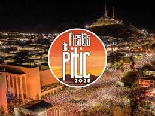
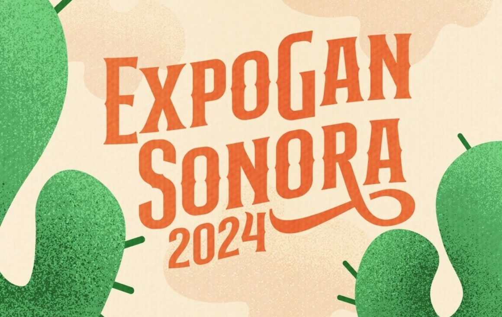
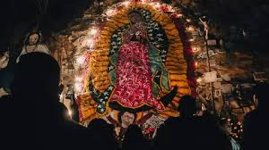

Costumbres
|

Las Fiestas del Pitic son un festival cultural que se celebra cada año en Hermosillo, Sonora, alrededor del 30 de mayo, para conmemorar la fundación de la ciudad (en 1700, como "Villa del Pitic"). |

La Semana Santa es una celebración religiosa cristiana que conmemora la pasión, muerte y resurrección de Jesucristo. Es una de las festividades más importantes del cristianismo. |
|

Originalmente concebida en 1983 por la Unión Ganadera Regional de Sonora (UGRS), la ExpoGan comenzó como una iniciativa para promover la ganadería en el estado. A lo largo de los años, ha evolucionado hasta convertirse en una fiesta popular que combina tradiciones ganaderas con entretenimiento familiar. |
|

En Sonora, la Peregrinación de la Virgen de Guadalupe es una tradición muy arraigada, especialmente en ciudades como Hermosillo, Nogales y Ciudad Obregón. Cada año, miles de fieles participan para honrar a la Virgen, considerada la protectora y madre espiritual de México. |